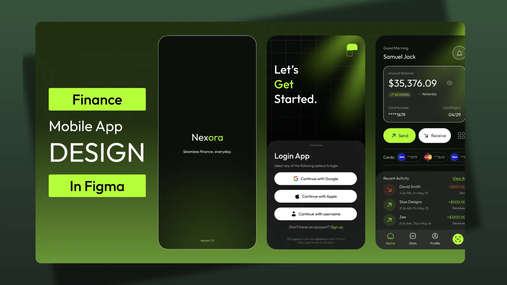
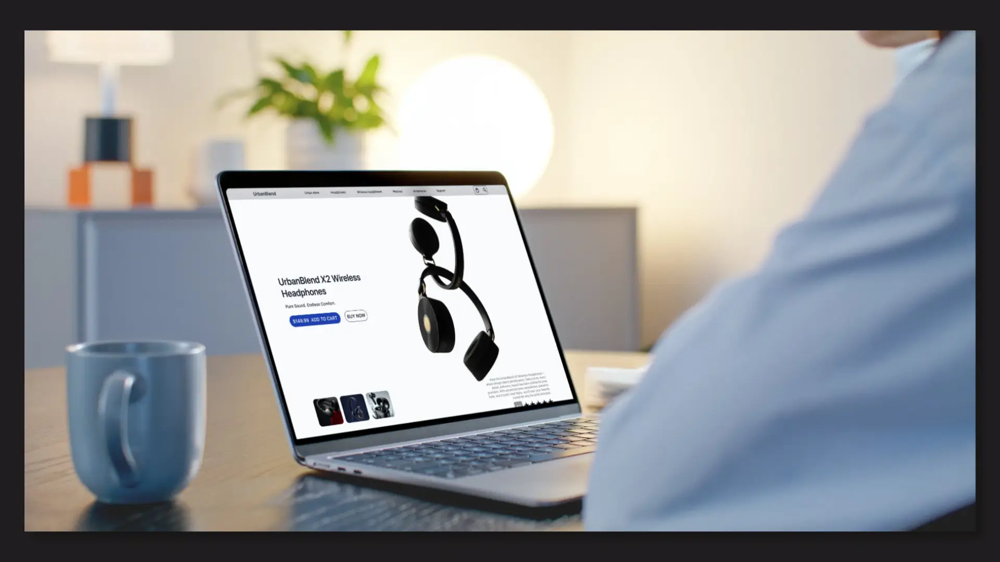
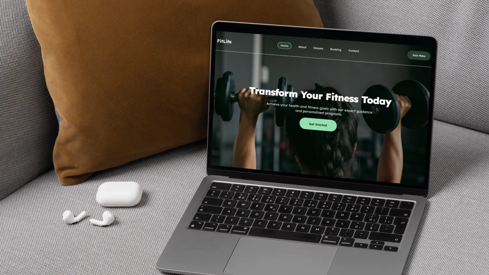
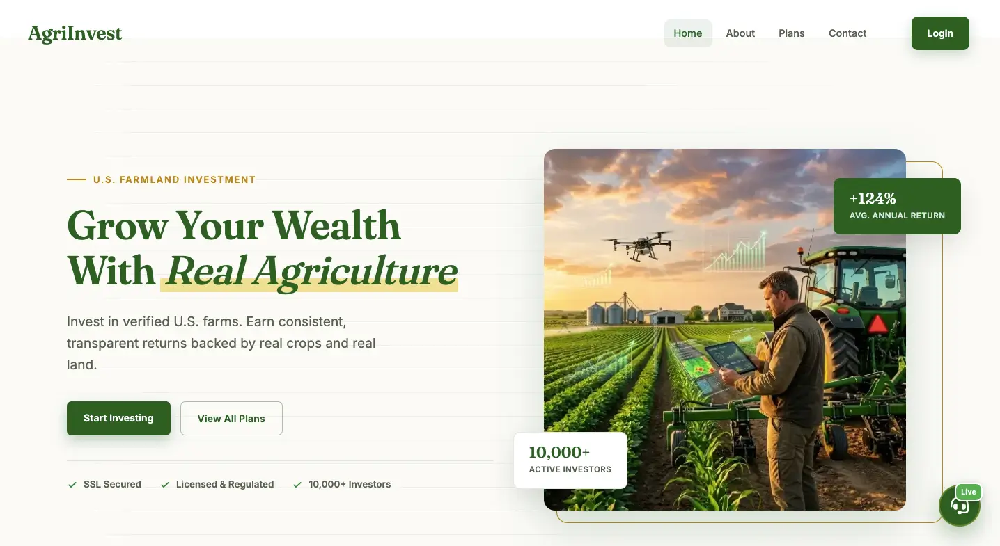
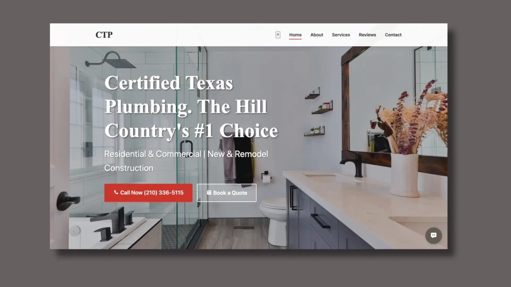

Projects

Nexora Fintech Mobile Banking Platform
Overview: Nexora is a modern fintech mobile application designed in Figma to simplify digital banking, money transfers, bill payments, and financial management through a secure and intuitive user experience.
Problem: Traditional banking applications often suffer from complex navigation, cluttered interfaces, and lengthy transaction processes that create friction for users managing their finances on mobile devices.
Goal: Design a seamless mobile banking experience that enables users to manage finances, transfer funds, monitor transactions, and access financial services quickly and confidently from a single platform.
Research & Strategy: The design process focused on understanding common pain points in digital banking, including onboarding friction, transaction visibility, payment confirmation, and financial tracking. The objective was to reduce cognitive load while maintaining trust, security, and ease of use.
Solution: Developed a complete fintech ecosystem featuring streamlined onboarding, wallet management, QR code payments, peer-to-peer transfers, transaction notifications, financial insights, and service integrations. A modern dark interface paired with vibrant accent colors was used to create a premium and trustworthy banking experience.
Key Features:
• User onboarding and account creation flow
• Secure authentication experience
• Digital wallet dashboard
• Peer-to-peer money transfers
• QR code payment functionality
• Transaction history and notifications
• Financial analytics and spending insights
• Utility payments and financial services hub
• Profile and account management
• Payment success and error handling flows
User Experience Focus:
The experience was designed around simplicity, speed, and trust. Clear visual hierarchy, intuitive navigation patterns, and streamlined task flows help users complete financial actions with minimal effort while maintaining confidence throughout critical transactions.
Design Process:
User Research → User Flow Mapping → Information Architecture → Wireframing → High-Fidelity UI Design → Design System Creation → Interactive Prototyping
Tools Used: Figma, Auto Layout, Components, Variants, Interactive Prototyping, Design System Development
Outcome: Delivered a scalable fintech product concept that demonstrates how modern digital banking can simplify financial management while improving accessibility, user confidence, and overall transaction efficiency across mobile devices.

UrbanBlend Audio E-commerce Experience
Overview: UrbanBlend is a modern e-commerce experience designed in Figma for a premium audio brand specializing in wireless headphones and accessories. The project focuses on creating an engaging shopping journey that balances product storytelling with conversion-driven design.
Problem: Many online electronics stores overwhelm users with technical specifications and cluttered layouts, making it difficult for shoppers to compare products, understand key benefits, and make confident purchasing decisions.
Goal: Design a seamless product discovery and purchasing experience that highlights product value, improves usability, and increases conversion opportunities across desktop and mobile devices.
Research & Strategy: The design process focused on understanding how users browse consumer electronics, compare product options, and evaluate purchasing decisions. Special attention was given to visual hierarchy, trust signals, product imagery, and call-to-action placement.
Solution: A clean and modern e-commerce interface was created featuring immersive product showcases, product variant exploration, customer ratings, pricing visibility, and strategically placed purchase actions. The experience guides users naturally from product discovery to checkout consideration.
Key Features:
• Product-focused landing experience
• Interactive product gallery and previews
• Product comparison and model selection
• Customer ratings and social proof integration
• Conversion-focused call-to-action placement
• Product specification and feature breakdowns
• Responsive e-commerce layout design
• Consistent design system and reusable components
Design Process:
Competitive Analysis → User Flow Mapping → Wireframing → High-Fidelity UI Design → Component System → Interactive Prototyping
Tools Used: Figma, Auto Layout, Components, Variants, Interactive Prototyping
Outcome: Delivered a premium e-commerce product experience that improves product discoverability, simplifies purchasing decisions, and showcases how consumer electronics brands can create visually engaging, conversion-focused digital storefronts.

FitLife Fitness Booking & Membership Platform
Overview: FitLife is a comprehensive fitness platform designed in Figma to help gyms and wellness brands manage memberships, class bookings, trainer visibility, and customer engagement through a seamless digital experience.
Problem: Many fitness businesses rely on fragmented systems for memberships, scheduling, and customer communication, creating friction for users and reducing conversion opportunities.
Goal: Create an intuitive digital platform that simplifies the fitness journey—from discovering services and trainers to booking classes and becoming a long-term member.
Research & Strategy: The design focused on understanding how fitness enthusiasts interact with gym websites and booking systems. Key priorities included reducing booking friction, improving content discoverability, and creating clear conversion paths for prospective members.
Solution: Designed a complete user experience ecosystem featuring service discovery, trainer profiles, class scheduling, membership plans, testimonials, and booking workflows. The interface combines strong visual hierarchy, accessible navigation, and modern fitness branding to guide users toward meaningful actions.
Key Features:
• Multi-page fitness platform design
• Class booking and scheduling interface
• Membership pricing and conversion funnels
• Trainer profile and credibility sections
• Customer testimonial integration
• Mobile-first responsive layouts
• Consistent design system and reusable components
• Clear user journeys and navigation structure
Design Process:
User Research → Information Architecture → Wireframing → High-Fidelity UI Design → Component System → Interactive Prototyping
Tools Used: Figma, Auto Layout, Components, Variants, Interactive Prototyping
Outcome: Delivered a scalable fitness platform concept that demonstrates how modern gyms can streamline member acquisition, simplify class management, and create a more engaging digital experience for their customers.

NeuroMech 3D Interactive Landing Page
Overview: A futuristic robotics landing page designed to showcase human–AI collaboration through immersive 3D interaction and clean UI.
Problem: Most AI websites are either too technical or visually uninspiring, leading to low engagement.
Goal: Create an engaging experience that simplifies complex ideas while capturing attention instantly.
Solution: Built a visually immersive interface using a real-time 3D robot, bold typography, and clear call-to-actions to guide users.
Key Highlights:
• Interactive 3D hero (Spline)
• Clean visual hierarchy
• Lightweight animations for performance
• Clear user flow and navigation

DropMint – DeFi Airdrop Platform
Overview: A decentralized platform designed to simplify crypto airdrops and community onboarding.
Problem: Many DeFi platforms overwhelm users with complexity and lack trust signals.
Goal: Design a clean, trustworthy interface that makes crypto participation simple.
Solution: Structured layout with clear messaging, roadmap visualization, and onboarding-focused sections.
Key Highlights:
• Simplified crypto messaging
• Visual roadmap
• FAQ for user clarity
• Strong conversion-focused CTAs
.png)
NestVibe Realty Website
Overview: A modern real estate platform built to simplify property search and improve user trust.
Problem: Property websites are often cluttered and hard to navigate.
Goal: Create a clean, intuitive browsing experience.
Solution: Designed a structured layout with filters, featured listings, and trust-building sections.
Key Highlights:
• Smart filtering system
• Clean layout & hierarchy
• Testimonials & trust elements
• Fully responsive design

ShopDart – Multi Vendor E-commerce
Overview: A live e-commerce platform delivering a smooth and efficient multi-vendor shopping experience.
Problem: Many e-commerce platforms suffer from poor navigation and checkout friction.
Goal: Improve user flow and increase conversion.
Solution: Designed a clean interface with intuitive navigation and real-time cart updates.
Key Highlights:
• Clear product hierarchy
• Real-time cart feedback
• Smooth navigation flow
• Conversion-focused design
.png)
Yorùbá Mobile Keyboard – Inclusive UX
Overview: A mobile keyboard designed to support seamless typing in both English and Yorùbá.
Problem: Indigenous languages are poorly supported on most smartphones.
Goal: Enable fast, natural typing without switching apps.
Solution: Designed a dual-language keyboard with quick toggles and long-press diacritics.
Key Highlights:
• EN ⇆ YOR quick switch
• Tone mark support
• Familiar QWERTY layout
• Scalable for other languages

Miami Beach Super Plumber - Plumbing Service Business Website
Overview: Miami Beach Super Plumber is a modern service-business website designed and developed to help homeowners and commercial property owners quickly access professional plumbing services. The platform focuses on trust-building, emergency response conversion, and seamless user navigation.
Problem: Many local plumbing companies struggle with outdated websites that fail to communicate credibility, service coverage, and emergency availability. Users often have difficulty finding key information quickly, resulting in lost leads and reduced customer confidence.
Goal: Create a conversion-focused website that highlights emergency plumbing services, establishes trust through social proof, and encourages visitors to take immediate action through strategically placed contact options.
UX & Design Strategy: The user journey was carefully structured around urgency and trust. Clear calls-to-action, prominent contact information, service categorization, customer reviews, coverage areas, and a simplified service process were strategically placed throughout the website to reduce friction and increase conversions.
Development Approach: Built from scratch using semantic HTML5, modern CSS3, and JavaScript, the website emphasizes performance, responsiveness, and maintainability. AOS (Animate On Scroll) was integrated to create engaging transitions while preserving usability and accessibility across all devices.
Key Features:
• Fully responsive mobile-first design
• Emergency plumbing conversion-focused hero section
• Service showcase with detailed categories
• Customer testimonials and review integration
• Coverage area and service location presentation
• FAQ section for common customer concerns
• Clear multi-step customer service process
• Strategic call-to-action placement throughout the site
• Modern animations using AOS
• Professional trust-building layout and content hierarchy
Technologies Used: HTML5, CSS3, JavaScript, AOS (Animate On Scroll)
Outcome: Delivered a modern plumbing service platform that effectively communicates expertise, builds customer trust, and creates a streamlined path from website visit to service inquiry. The project demonstrates how strong UI design and frontend development can improve user engagement and support local business growth.

AgriInvestment — Agricultural Investment Platform
Project Overview: AgriInvestment is an agriculture-based investment platform that presents users with opportunities to invest in farming, crop production, and agribusiness ventures. The platform is positioned as a way for individuals to earn returns by funding agricultural projects.
Problem: Many agricultural investment platforms online struggle with trust, clarity, and transparency. Users are often presented with high-return promises but little explanation of how the system works. Research shows that some platforms in this space raise red flags such as low credibility, unclear ownership, and poor user experience, which can make users hesitant to invest.
Goal: Redesign and structure a landing experience that:
• Clearly explains how agricultural investment works
• Builds user trust through transparency and structure
• Simplifies complex financial concepts for everyday users
• Encourages safe and informed participation
Solution: Designed a clean, conversion-focused landing page with:
• A strong hero section explaining “what the platform does” in simple terms
• Structured investment plans with clear breakdowns (duration, returns, risk level)
• Trust-building sections like FAQs, testimonials, and transparency blocks
• Step-by-step “How It Works” flow to guide new users
• Clear CTAs such as “Start Investing” and “Learn More”
Case Study: The design focuses heavily on user trust and clarity, which are critical in financial and investment platforms.
Many similar platforms fail due to lack of credibility signals, so this solution prioritizes:
• Visual hierarchy to highlight key information
• Simple language instead of technical jargon
• Transparency-driven UI sections
• Mobile-friendly layout for accessibility
The result is a platform experience that feels more reliable, understandable, and user-centered, improving both engagement and conversion potential.

Certified Texas Plumbing — Service-Based Business Website
Project Overview: Certified Texas Plumbing is a service-based website designed for a local plumbing company. The platform focuses on helping homeowners quickly understand available services, build trust, and request plumbing assistance without friction.
Problem: Many plumbing websites suffer from poor structure, unclear messaging, and weak conversion paths. Users often struggle to:
• Find key services quickly
• Trust the company due to lack of credibility signals
• Take action (call, book, request service)
In competitive local markets, this leads to lost leads and high bounce rates.
Goal: Design a clean, high-converting service website that:
• Clearly communicates services and expertise
• Builds trust instantly with visitors
• Encourages fast action (call or booking)
• Works seamlessly across mobile and desktop
Solution: The website was structured using a conversion-focused layout:
• Strong hero section with bold headline and CTA (“Call Now”, “Get Service”)
• Clearly defined service categories (repairs, installations, inspections)
• Trust indicators such as experience, guarantees, and certifications
• Testimonials to reinforce credibility
• Simple contact flow to reduce friction for users needing urgent help
Case Study: The design follows proven service-based UX patterns where speed and trust are critical.
Plumbing services are often urgent, so the interface prioritizes:
• Immediate visibility of contact actions
• Clear service breakdown for quick decision-making
• Minimal distractions to guide users toward conversion
By combining strong visual hierarchy, responsive layout, and trust-driven sections, the website improves user confidence and increases the likelihood of inquiries and service bookings.
Let's Collaborate
👨💻 UX/UI Designer • 🎨 Figma • 🚀 Webflow • 🧠 Design Thinking • 📱 Responsive Design • 🔧 Prototyping • Available for freelance work! Let’s collaborate on your next project.